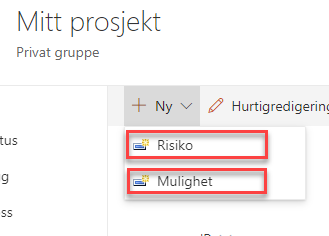
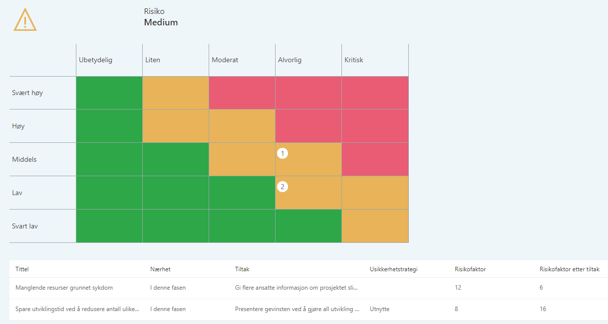
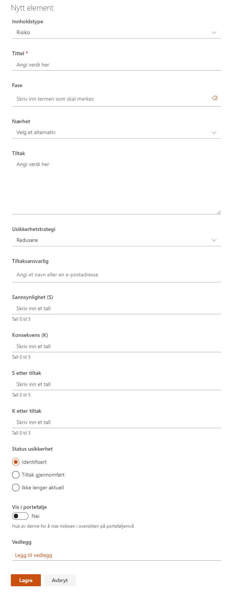

Usikkerhetslista lar prosjektdeltagere loggføre alle usikkerhetselementer som har oppstått, eller som har risiko for å oppstå, i løpet av et prosjekt.

Usikkerheter kan registreres som Mulighet eller Risiko og knyttes til fase i prosjektet.
Ved å trykke på tittelen på lista eller Usikkerhet i venstremenyen ser du alle usikkerheter, uavhengig av fase.
Usikkerheter som er registrert og har status som Identifisert vil synliggjøres i Prosjektstatus under Risiko.

Når det legges inn en ny usikkerhet, er det en mengde data som legges inn på den aktuelle risiko eller mulighet. Det er de samme dataene som er aktuelle for både risiko og muligheter.
Usikkerheten kan knyttes opp mot en prosjektfase om ønskelig.
Dataverdien Nærhet har følgende forhåndsdefinerte verdier:
Usikkerhetsstrategi har disse forhåndsdefinerte verdiene:
Bryteren Vis i portefølje gjør det mulig å vise den aktuelle risikoen i Risikooversikten på Porteføljenivå.
Vedlegg kan legges til på enkelt elementer. Merk at disse vedleggene bare lagres i denne listen, og blir ikke vist i dokumentbiblioteket.
